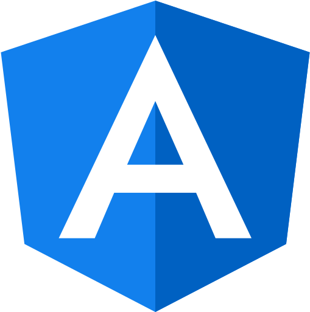

<!-- Sidenav -->
<nav
  id="sidenav-8"
  class="fixed left-0 top-0 z-[103] h-full w-60 -translate-x-full overflow-hidden bg-white shadow-[0_4px_12px_0_rgba(0,0,0,0.07),_0_2px_4px_rgba(0,0,0,0.05)] data-[te-sidenav-hidden='false']:translate-x-0 dark:bg-zinc-800"
  data-te-sidenav-init
  data-te-sidenav-hidden="false"
  data-te-sidenav-position="fixed"
  data-te-sidenav-accordion="true">

  
  <div class="mb-3 flex items-center border-b-2 border-solid border-gray-100 py-6 outline-none">
    <a
      class="ml-6 flex items-center text-neutral-900 hover:text-neutral-900 focus:text-neutral-900 lg:mb-0 lg:mt-0"
      routerLink="/"
    >
      
      <label class="px-1 text-dark2 cursor-pointer font-medium"
        >Angular Task</label
      >
    </a>
  </div>
  <ul
    class="relative m-0 list-none px-[0.2rem] pb-12"
    data-te-sidenav-menu-ref>
    <li class="relative pt-4">
      <a
        class="flex cursor-pointer items-center truncate rounded-[5px] px-6 py-[0.45rem] text-[0.85rem] text-gray-600 outline-none transition duration-300 ease-linear hover:bg-slate-50 hover:text-inherit hover:outline-none focus:bg-slate-50 focus:text-inherit focus:outline-none active:bg-slate-50 active:text-inherit active:outline-none data-[te-sidenav-state-active]:text-inherit data-[te-sidenav-state-focus]:outline-none motion-reduce:transition-none dark:text-gray-300 dark:hover:bg-white/10 dark:focus:bg-white/10 dark:active:bg-white/10"
        data-te-sidenav-link-ref routerLink="/createProjects">
        <span class="text-blue2  pr-2">
          <i class="fa-solid fa-square-plus text-2xl"></i>
        </span>
        <span>Create Project</span>
      </a>
    </li>
    <li class="relative">
      <a
        class="flex cursor-pointer items-center truncate rounded-[5px] px-6 py-[0.45rem] text-[0.85rem] text-gray-600 outline-none transition duration-300 ease-linear hover:bg-slate-50 hover:text-inherit hover:outline-none focus:bg-slate-50 focus:text-inherit focus:outline-none active:bg-slate-50 active:text-inherit active:outline-none data-[te-sidenav-state-active]:text-inherit data-[te-sidenav-state-focus]:outline-none motion-reduce:transition-none dark:text-gray-300 dark:hover:bg-white/10 dark:focus:bg-white/10 dark:active:bg-white/10"
        data-te-sidenav-link-ref>
        <span class="text-blue2  pr-2">
          <i class="fa-solid fa-gear text-2xl"></i>
        </span>
        <span>Manage Projects</span>
      </a>
    </li>
  </ul>
</nav>
<!-- Sidenav -->